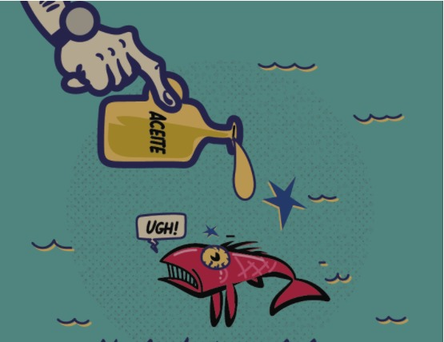

ÚNETE A PELOTERO Y COMIENZA A GANAR RECICLANDO ACEITE DE COCINA USADO
Recuerda que 1 litro de aceite contamina 1000 litros de agua.

Cómo trabajamos con nuestros socios
- Descarga nuestra aplicación Pelotero Separador, convierte en nuestro socio y comienza a ganar.
- Cada vez que utilices nuestra aplicación podrás ir acumulando puntos y estos podrán ir siendo acumulados para que los puedas redimir en bonos con nuestros aliados comerciales o en dinero.
- Si no cuentas con contenedores para separar y almacenar el aceite de cocina utilizado previo a la recolección, Pelotero te hará entrega de los contenedores necesarios de acuerdo con la necesidad de cada socio, lo anterior, solo aplica para empresas, industrias y restaurantes.
- Para hogares, cada socio deberá entregar el material debidamente empacado y sellado en cualquier tipo de envase plástico o de vidrio de mínimo 1 litro.